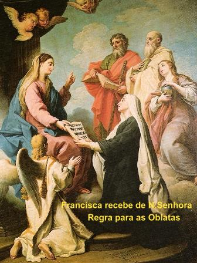
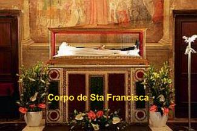
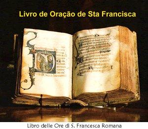

VISÕES ANGÉLICAS,
"TOR DE
SPECCHI"
(TORRE DO ESPELHO),
MORTE E CANONIZAÇÃO
 Foi também notável a capacidade da Santa de penetrar na mística do mundo dos
Anjos. No livro sobre as Visões dos Anjos, são relatados textos preciosos, com a
visão das maravilhas Divina no Céu e a função Angélica na liturgia celeste e na
glória do Paraíso. Nos duelos demoníacos os Anjos são os vigorosos combatentes
para a salvação das almas, assim como ferrenhos adversários do diabo. No
Purgatório eles têm o encargo de
“Enfermeiros Espirituais”,
responsáveis pela observância do tempo de purificação e
de expiação de cada alma.
Foi também notável a capacidade da Santa de penetrar na mística do mundo dos
Anjos. No livro sobre as Visões dos Anjos, são relatados textos preciosos, com a
visão das maravilhas Divina no Céu e a função Angélica na liturgia celeste e na
glória do Paraíso. Nos duelos demoníacos os Anjos são os vigorosos combatentes
para a salvação das almas, assim como ferrenhos adversários do diabo. No
Purgatório eles têm o encargo de
“Enfermeiros Espirituais”,
responsáveis pela observância do tempo de purificação e
de expiação de cada alma.
Francisca marcou
uma etapa importante na história da Angelologia, não tanto do ponto de vista
doutrinário e teológico, mas primordialmente pela capacidade de exprimir e
aperfeiçoar uma amizade concreta e singular com o seu Anjo da Guarda. Esse
invisível guia espiritual tem uma forte e atuante influência na vida terrena de
cada pessoa: interiormente ele sustenta e conforta as dificuldades da vida, guia
e protege o caminho, ele orienta as decisões corretas, o cultivo do amor a DEUS,
acompanha cada um na fase de separação da alma do corpo com a morte física, e
principalmente, é o professor atento que espiritualmente ensina e prepara cada
alma, para a sua existência futura. Francisca nos estimula, sobretudo, a
procurarmos entender as mensagens que fraternalmente emanam de nosso Anjo
Custódio, a compreender porque às vezes somos convidados a proceder de uma
maneira dócil, conciliadora e não agressiva; a entender porque às vezes ocorrem
alguns atrasos nos horários ou algumas antecipações no cotidiano. Acontecem por
quê? Para evitar um acidente? Evitar um mau entendimento? Um encontro
desagradável? Ou ao contrário, para chegar mais cedo e melhor se concentrar nas
orações na Igreja, ou rever uma pessoa com prazer e imensa satisfação? A sua
preocupação em chegar mais cedo seria para praticar e exercitar a caridade
cristã? A Santa recomenda que as pessoas devam ser observadoras, procurando
entender aquilo que Anjo da Guarda quer nos dizer ou nos ensinar.
As visões
Angélicas começaram no ano de 1411. O seu primeiro filho Giovanni Evangelista,
com quase 9 anos de idade veio a falecer por causa da epidemia de peste. Era uma
inocente criança, que pouco antes de morrer, sorriu para a sua mãe e disse:
“Vejo os Anjos que estão vindos para me
levar para o Céu! Mãe, eu vou me lembrar sempre da senhora”. Exatamente um ano após a morte do jovem, Francisca passou
a noite inteira em oração, no Oratório de seu palácio em Roma. Ao amanhecer, o Oratório
foi invadido por uma luz brilhante, e naquela luz, ela viu o seu filho Giovanni
Evangelista com a fisionomia alegre e usando a mesma roupa, mas estava
extraordinariamente belo e resplandecente. Ao seu lado tinha outro, era um Anjo
mais bonito e glorioso. Mas Francisca só tinha olhos para o seu filho amado. Com
os braços abertos, o filho saudou a mãe: “Eu estou com os Anjos do segundo coro da Primeira Hierarquia, junto com
o meu companheiro, que como você vê, é mais bonito e mais brilhante do que eu. Ele
é um Arcanjo e no Céu ocupa um posto acima do meu. DEUS o envia a você, minha
querida mãe, para ajudá-la a ter maior proteção na sua peregrinação terrena. Ele
não lhe deixará dia e noite, e assim, terá a satisfação de vê-lo sempre”.
Como a luz do novo dia entrava no Oratório,
a alma do jovem filho disse a sua mãe: “É a Vontade de DEUS que eu retorne ao Céu, deixando este Arcanjo que
permanecerá com a senhora para se lembrar de mim”. Com um sorriso, desapareceu. A visão durou uma hora
aproximadamente. Ficando sozinha, Francisca viu próximo dela o Arcanjo de DEUS
com as mãos cruzadas sobre o peito. Emocionada, se prostrou de joelhos no chão,
agradecendo ao SENHOR por aquela extraordinária concessão. A linda Inês, ou seja,
aquele pequeno Anjo narrou para a Santa, que deixou o mundo e veio para o Divino
Esposo JESUS CRISTO com a idade de 5 anos. Francisca pediu ao Anjo para iluminá-la
em suas dúvidas, assisti-la nas dificuldades, defendê-la contra os ataques do demônio,
e ser o seu guia no caminho da perfeição, corrigindo os seus defeitos, para que ela
fosse cada vez mais aceitável aos olhos de DEUS. A Santa ficava assiduamente com
o Anjo, dia e noite. Ele embora fosse um Anjo do Coro dos Arcanjos, mantinha a
sua aparência com a idade mencionada de cinco anos e bem pouco do seu esplendoroso
brilho, porque se assim não fosse, os olhos mortais de Francisca não poderiam
suportar a imensa luminosidade que emanava dele. Era uma criatura muito bonita e
seu rosto tinha feições celestiais, mantendo o olhar nobre e sempre voltado para
o Céu. Mesmo assim, Francisca não conseguia olhar fixamente nele por um tempo
maior, porque o brilho do Arcanjo lhe causava desconforto visual.
Ele
usava uma túnica branca longa fechada no pescoço, e sobre ela, tinha um manto
que chegava aos pés. O manto era claro como a luz e de uma cor etérea que às vezes
mudava para o azul do Céu, e de outras vezes, para o vermelho flamejante. Seu cabelo
era dourado e com tamanho suficiente para cobrir o pescoço e tocar os ombros. A
luz brilhante que fluía de seu cabelo era tão forte, que Francisca poderia ler a
noite, sem necessitar de outra iluminação, ou caminhar pela casa tranquilamente,
com total visibilidade, como se fosse ao meio-dia. Percebeu também, que quando
estava em êxtase podia olhar o Arcanjo normalmente, sem qualquer dificuldade. O
poder dele parecia estar no cabelo, de modo que quando o diabo vinha tentar
Francisca, ele balançava a cabeça e isso era suficiente para espantar o demônio.
Ela observou também que a luz que emanava de seu Arcanjo lhe permitia ver os
pensamentos secretos das pessoas ao seu redor, assim como as maquinações
terríveis de satanás. Viu ainda, que o Arcanjo às vezes andava ou ficava à sua
direita e às vezes a sua esquerda. Numa ocasião, este Arcanjo imobilizou a mão
de um homem que tentava matá-la. Quantas vezes a serva de DEUS rezando ou
contemplando o SENHOR, teve de suportar o abominável sentimento de inveja do
demônio, que logo se manifestava açoitando-a ferozmente com nervos de animais
ou cobras mortas, dando puxões em seus cabelos e arrastando-a pelo quarto.
Ainda que não fosse só a própria essência diabólica, mas também aquela
aparência terrível e horrorosa que o demônio tem, suficiente para aterrorizar.
Às vezes aparecia em forma de serpente e de víboras, e frequentemente como
ferocíssimos leões ou impetuosos cães, ou ainda, como porcos esquisitos ou
touro bravo. Muitíssimas vezes também apareciam sob a forma de santos, de
piedosos padres ou freiras. Então, no ambiente cotidiano, um Anjo
protetor era necessário a Francisca.
Poderiam
questionar, por que o SENHOR permitiu aqueles ataques cruéis do maligno?
A resposta é evidente, pois tudo o que acontece tem a permissão
Divina e, portanto, aquilo era um importante alerta a humanidade de todas as
gerações, como um sinal, convidando às pessoas buscarem a conversão do coração, e
como ensinamento e advertência sobre a realidade do inferno. Não existem na
História do Cristianismo, além de Francisca, outras agressões diretas do
espírito maligno contra o ser humano, de modo tão frequente e brutal. Por isso não é
difícil entender que DEUS permitiu este acontecimento para acabar com a
descrença, mostrando que efetivamente o demônio existe e ele quer destruir a
humanidade. E justamente por se tratar de um ensinamento Divino, o SENHOR não
permitiu que o diabo excedesse em suas maldades além do limite físico suportado
pelo ser humano. E por outro lado, o SENHOR sempre intervém no momento certo,
atendendo aos apelos de sua serva Francisca, deixando-a em segurança.
A presença do Anjo protetor que o SENHOR enviou a Francisca vem nos alertar num
outro importante ensinamento. A Vontade de DEUS é magnânima, o SENHOR não
precisa de nada para fazê-la prevalecer, ELE tem poder para interromper qualquer
agressão do maligno em qualquer momento. Assim sendo, a simples vinda do Anjo
protetor não seria necessária para proteger Francisca. Mas o Anjo veio para
lembrar a humanidade, principalmente àqueles que se esforçam em serem
amigos de DEUS, que invocando e suplicando o auxílio Divino, ELE sempre
estará presente. No perigo iminente ou na busca de soluções para vencer
dificuldades e problemas, invocando a ajuda do SENHOR, ELE nunca faltará,
atenderá no momento oportuno, a todos os seus filhos que necessitam
de sua inefável proteção contra as maldades do mundo e as tramas
de satanás.
No
primeiro ano de sua viuvez, ano de 1436, no mês de Março, dia de São Benedito,
quando voltava para casa, onde morava com sua irmã e seus filhos, no interior de
seu espírito Francisca se sentiu carregada e até envolvida. Eram imensas graças
Divinas que produziam aquele admirável efeito. Então percebeu pelos sentidos que
favoravelmente e de boa vontade o SENHOR lhe concedeu outro Anjo. Não que a
pequena Agnes não fosse eficiente e carinhosa, mas a vinda de um Arcanjo mais
experiente, pertencente ao Quarto Coro Angélico, e, portanto, mais conhecedor da
humanidade e com muito mais poderes, sem dúvida iria lhe ajudar de modo concreto
em sua missão existencial.
CARIDADE E HUMILDADE
- INCANSÁVEL APOSTOLADO
Francisca escolheu definitivamente se colocar ao serviço das pessoas
necessitadas. Mantendo o seu olhar na direção de DEUS, traçou uma
única diretriz de ajudar ao irmão, porque ele é a imagem do SENHOR. Nós também
podemos nos santificar permanecendo no mundo, com uma vida simples e pobre,
aberta ao amor fraterno e cultivando a oração. Todavia, ela nunca colocou as
suas necessidades espirituais e as práticas contemplativas na frente, em relação
à sua disponibilidade pessoal, sempre priorizou a família. Apesar de se ter dedicado
zelosamente a penitência e aos exercícios espirituais, Padre Mattiotti salienta
no seu “Tratado da Vida”
que, se ela estava
ocupada em casa deixava para atender depois a necessidade espiritual.
Muitas vezes
jejuava, passando dias a pão e água, dedicando horas a oração e a meditação, num
contato permanente e amoroso com o SENHOR, suplicando a misericórdia Divina para
debelar os males que aconteciam, da mesma maneira que intercedia em benefício da
conversão de todos necessitados. DEUS, bondade sem limites, concedeu-lhe uma
quantidade incontável de dons e virtudes, inclusive êxtases e visões
sobrenaturais, que utilizava em benefício dos pobres e daqueles sem recursos,
curando uns, saciando a fome de outros e exercitando um admirável apostolado
misericordioso. Idealista e sempre cheia de entusiasmo, não se afastava da sua diretriz de
amor e para se manter aberta as graças Divina, semanalmente continuava a
receber o Sacramento da Confissão, com o seu confessor Padre Antonio Savello, na
Igreja de Santa Maria Nova.
O exemplo digno de
Francisca e de Vanozza, auxiliando os necessitados onde estivessem, despertou a
atenção da sociedade romana, e atraiu outras senhoras nobres a imitar aquele
admirável modelo. E verdadeiramente isto aconteceu, muitas senhoras se uniram a
elas na prática da caridade, afastando-se das vaidades mundanas, vivendo uma
existência mais condizente com a vocação de cristão.
OS ESTASES
A Capela do Anjo
na Basílica de Santa Maria Nova, era o local principal aonde aconteciam os seus êxtases,
pois geralmente aquelas manifestações sobrenaturais ocorriam durante a Santa Missa,
imediatamente depois de receber a Sagrada Comunhão. Envolvida por uma concentração
espiritual forte e elevada, perdia contato com a realidade circundante por uma
ou mais horas. Estes estados tinham diferentes graus de profundidade
e de intensidade, que o Padre Giovanni Mattiotti confessor de Francisca, que substituiu
ao falecido Padre Antonio Savello (antigo confessor), relata com clareza todos os importantes
acontecimentos da existência da Santa nos denominados “Tratados” que escreveu :
Tratado da Vida, Tratado dos Combates, Tratado do Purgatório, Tratado do Inferno, e, Visões
Paradisíacas e Revelações.
A OBLAÇÃO
Cerca do ano 1424 ou 1425 a vida da Santa sofreu uma profunda e decisiva
troca de estado. Depois de 28 anos de união matrimonial, Lorenzo Ponziani concordou
com o desejo da esposa, de viver uma existência casta. Francisca de fato não
deixou o marido, juntos continuaram a dormir no mesmo quarto, mas não na mesma
cama, até a morte dele em 1436. Compartilhou com ele, os
últimos e difíceis anos da doença e do sofrimento de seu esposo, ajudando e
tratando cuidadosamente dele, e não abandonando o palácio. Francisca serviu ao
seu marido até o último momento, com dedicação total, mas não o fez
participante do seu mundo interior. Humildemente e com plena fidelidade,
ocultava todo aquele imenso acontecimento espiritual. Quando a noite o demônio a
perseguia para retirá-la da oração, empreendendo um verdadeiro duelo, sempre
que possível mantinha o marido sem nada saber sobre aquelas lutas noturnas, as
quais ele assistia como espectador assustado e ignorante, por que só enxergava a
movimentação da esposa, compreendendo a sua dificuldade, mas não sabia por que
e nem como ajudá-la.
No dia 15 de
Agosto de 1425, na solenidade da Assunção de NOSSA SENHORA ao Céu,
dez mulheres, nove senhoras lideradas por Francisca, ofereceram-se como Oblatas da VIRGEM
MARIA, na Basílica de Santa Maria Nova no Paladino. O pequeno grupo de
companheiras era composto por mulheres das famílias mais nobres e mais ricas da
cidade. Embora continuassem a viver em seus lares, com suas famílias, elas se
comprometeram com a “oferta”
(oblação) a
uma vida cristã mais perfeita, na frequência aos sacramentos, na penitência e
nas obras de caridade. E nas obras de caridade, se comprometeram a realizar um
profícuo exercício da misericórdia, para socorrer e auxiliar cristãmente aos
necessitados dando apoio tanto para o corpo, como para a alma de todos eles. Eram
denominadas “Oblatas Seculares”
(Pessoas do mundo a serviço de
DEUS). Francisca fez a sua “oblação
oficial” (sua dádiva a DEUS) na
presença do Padre Olivetano Ippolito da Roma, que era o prior do Mosteiro Olivetano
em Roma. O texto da oblação foi fornecido ao prior Ippolito, pelo Abade Geral da
Congregação de Monte Oliveto, Frei Girolamo da Perugia.
TOR DE SPECCHI
Na continuidade de seu projeto, em 1433, Francisca estabeleceu uma comunidade de
“Oblatas
regulares”, adquirindo uma casa no Bairro Campitelli, aos pés do Monte
Capitolino, entre o Capitólio e o teatro Marcello. O Papa Eugenio IV autorizou a sua
petição anterior para possuir em Roma uma residência fixa, com um endereço, onde
a comunidade pudesse ser encontrada, elegendo uma Presidente e uma Diretoria,
associando outras mulheres e escolhendo um confessor para suporte espiritual.
Tudo isso com o consentimento dos Monges Olivetanos, a cuja Congregação, o
Instituto das Oblatas ficou unido. Desde o principio, o Mosteiro do Instituto
das Oblatas foi denominado com o curioso nome “Tor de’ Specchi” (Torre
do Espelho). Mas na verdade, os seus membros não podiam ser chamados de Monjas, pois
naquele tempo elas não podiam fazer os votos públicos e solenes exigidos, sem antes se
submeter a uma clausura fechada e estrita. O normal dos estatutos assim exigia.
Elas eram senhoras casadas e tinham as suas famílias. Por esse motivo, no Instituto
fundado por Francisca os membros eram inicialmente chamados de
“Oblatas do SENHOR”.
Por isso, elas
faziam votos reservados, praticando intensamente a oração e cantavam ou
recitavam diariamente o oficio Divino. Sua observância religiosa era austera e
permanente. Mas também saíam do Mosteiro para realizar importantes tarefas de
assistência social, assim como obras em benefício da Diocese e de Sua Santidade
o Papa. As Oblatas não eram numerosas, no tempo de sua fundadora eram 15
mulheres, mas que operavam com decisão e competência os trabalhos de ajuda aos
necessitados. Faziam-se notar pela vida exemplar e um zelo excepcional na sua
atividade caritativa. O Cardeal beneditino Agustín Mayer assim comenta o fato:
“Havia surgido uma congregação
feminina nova e originalíssima: religiosas sem votos, sem clausura, mas de vida austera,
que se dedicavam ao serviço dos mais miseráveis e necessitados, praticando um genuíno e
verdadeiro apostolado social”.
Este grupo,
que representa talvez a experiência mais fecunda e interessante do
movimento religioso feminino em Roma, no século XV era constituído por
representantes das famílias mais ricas e opulentas dos negócios romanos, algumas
das quais estavam ligadas entre si ou com Francisca, por laços mais ou menos
próximos de parentesco ou de amizade. A casa dos Ponziani era o local de reunião
de todos estes amigos espirituais que incentivados e guiados pela Santa, frequentavam
juntos a Santa Missa e a Sagrada Comunhão na igreja de Santa Maria em Trastevere
ou iam juntas ganhar indulgências nas Basílicas da cidade, partilhando a prática
das pequenas peregrinações urbanas, tão caras a Francisca.
Ela agia
como se fosse uma mãe, atenta às necessidades práticas e aos problemas
espirituais dos seus filhos. Desfrutando de seus carismas, exorcizava as
tentações do diabo, e graças ao dom de ler corações, protegia-os dos perigos e
das perseguições. Provavelmente por inspiração dela mesma, desde o início o
grupo era caracterizado por um valor de referência precisa da espiritualidade
monástica beneditina. Também não devemos subestimar o fato de que o confessor da
Santa era um monge beneditino olivetano de Santa Maria Nova, Frei Antonio di Monte
Savello, muito conhecido em Roma por sua santa vida e profunda piedade.
Em 1436 morreu Lorenzo
Ponziani. Aquele ferimento nas costas, que jamais foi curado, originou outras sérias
complicações, que apesar do empenho de Francisca e dos profissionais da medicina, não
conseguiram salvar a sua vida.
A liberação do vínculo
matrimonial proporcionou a Santa à liberdade de viver junto com suas companheiras de
ideal. Se a vida matrimonial a conduziu a cultivar os valores da sua ética religiosa
leiga, baseada na pratica das obras de misericórdia, na fase final do seu progresso
espiritual ela pode intimamente penetrar mais profundamente nas esferas superiores
da meditação sagrada.
A partir deste momento Francisca seguiu uma complexa viagem mística, durante a
qual foi compensada pela graça sobrenatural, mas sofreu graves e dolorosas
torturas, tanto física como mental. Ela se impôs uma penitência duríssima,
passando por rigorosa abstinência, dormindo apenas duas horas por noite,
totalmente vestida, dedicando suas longas vigílias noturnas ao trabalho e as
orações. O seu quarto era a cena do ascetismo rígido, feito de flagelação,
cilício, de cruel maceração corporal, numa busca intensíssima de sofrimento.
Esta
experiência não tinha nada de masoquismo, e também não nasceu de uma fúria
autodestrutiva. Francisca apreendeu o ensinamento dos Padres do deserto, que
tinha na ascese uma espécie de disciplina de formação em vista do combate
espiritual que diariamente os aguardava. De fato, quanto mais uma pessoa
progride espiritualmente, mais deve estar pronta para enfrentar a dura
experiência da tentação, e assim, deverá estar preparada para repelir os ataques
do demônio. Este combate é também uma forma de ascese, e também uma suprema
forma de martírio. Também é a expressão maior do amor dedicado ao extremo,
para consolar o coração Divino por causa dos pecados da humanidade, suplicando
a misericórdia do SENHOR, para converter aqueles corações empedernidos que vivem
afastados, não rezam e são ingratos a DEUS.
No dia 21
de Março de 1436, Francisca agora mais livre de seus compromissos familiares, se
apresentou a aquele asilo de paz, vestida pobremente e calçando uma sandália;
prostrou-se com os joelhos no chão e humildemente solicitou de suas irmãs
oblatas, a graça de ser recebida no Mosteiro “Tor de’ Specchi”, como mais uma das servas do SENHOR. Ela que foi a
fundadora da Congregação, imediatamente foi recebida calorosamente por todas as
outras e contra a sua vontade, foi eleita Superiora da Associação. A partir
desta época, pode se dedicar com maior profundidade as obras de misericórdia e
ao cultivo da oração, dando um exemplo admirável as sua companheiras de ideal e
constituindo-se num precioso modelo de santidade.
As Oblatas de
Francisca não eram na realidade nem monjas e nem leigas, mas estava
mais perto de uma terciária franciscana, senhora religiosa que, não podendo ou
não querendo entrar num Mosteiro, passaram a viver sob o mesmo teto, formando
uma pequena comunidade devota. Este fenômeno muito comum na Europa na Idade
Média tinha conhecido uma enorme florescência em Roma, onde se ergueu numerosas
"casas santas"
de matriz terciária franciscana.
No dia em que
Francisca se associou definitivamente a sua própria Comunidade, teve uma visão
de NOSSO SENHOR sentado num trono alto e cercado por milhares de Anjos. Quando o
Coro Angélico das Potências veio adorar o SENHOR, ELE designou um dos mais altos
espíritos da hierarquia, para se tornar, a partir daquele momento, um protetor
especial de Francisca, em substituição ao Arcanjo Agnes que a vinha assistindo
durante 24 anos. Assumindo a forma humana este novo espírito era mais belo e
esplendoroso que o Arcanjo. Ele usava uma veste de aspecto mais preciosa e
demonstrava ter mais força e coragem. Sua presença era suficiente para afastar
qualquer espírito mal. Em sua mão esquerda levava três ramos de palmeira
dourada, símbolo do amor, da firmeza e da prudência, as três virtudes que ele
imprimia constantemente em Francisca.
Nem o Arcanjo que
assistiu Francisca por 24 anos, nem o poder Angélico que esteve com ela nos
últimos 4 anos de sua vida, era o seu Anjo da Guarda que recebeu ao nascer.
Segundo São Tomás de Aquino, esses dois Arcanjos suplementares que lhe protegeu,
DEUS os envia a pessoas que governam ou conduzem um povo, e estes Anjos tem
muito poder, profundo conhecimento da humanidade e quase sempre se originam de Coros
Angélicos mais elevados, mas no caso de Francisca, que era uma simples leiga,
foi uma concessão especial do SENHOR.
DONS E ESPECIAL
VIRTUDE INTERCESSORA JUNTO A DEUS
Uma quantidade
notável de testemunhos atesta que Francisca conversava frequentemente com o seu
Anjo da Guarda, dialogando sobre os problemas e buscando soluções. Também foi agraciada
com dons especiais pelo ESPÍRITO SANTO, principalmente o dom do Discernimento e o
dom do Conselho.
A CANONIZAÇÃO DE
FRANCISCA
A bula
da canonização fala de muitos milagres realizados pela Santa, dos quais,
separamos um pelo seu conteúdo totalmente sobrenatural. Em certo dia, não
sabiam como fazer o almoço para as Oblatas, porque faltava tudo. Francisca
assumiu a responsabilidade de fazê-lo. Foi para a cozinha e com 15 pequenos
pedaços de pães que mal dariam para satisfazer a fome de três pessoas, preparou
uma refeição que alimentou todas as Oblatas. Desta Divina multiplicação que ela
foi à fiel intercessora, sobraram pedaços de pães que encheram um cesto. O
SENHOR cheio de bondade e misericórdia derramou torrencialmente sobre Francisca
as suas Divinas e preciosas graças, como fez com outros Santos e com os
Apóstolos:“Chamou os
doze discípulos e deu-lhes autoridade de expulsar os espíritos imundos e de curar
toda a sorte de males e enfermidades”. (MT 10,1) O SENHOR atuava misericordiosamente curando e ressuscitando,
pelas mãos puras, amorosas e intercessoras, de sua serva
Francisca.
Nos últimos anos
de vida foi alertada com antecedência sobre a sua morte. Adoeceu no dia 3 de
Março
de 1440, e seu filho Giovanni Battista foi visitá-la
no palácio Ponziani, para onde tinha sido levada. À noite, quis retornar a pé a
“Tor de’ Specchi”
, para junto das Oblatas,
mas na estrada as forças lhe faltaram e teve que se assentar em algum lugar.
O Pároco de Santa Maria em Trastevere, que era o seu confessor, passava por ali
e a obrigou a voltar. A noite foi atacada por uma febre violenta. O SENHOR lhe
apareceu e disse que ela morreria em sete dias. Ela exclamou:
“Bendito seja DEUS”!
Na quinta-feira, dia 9
de Março de 1440, quando completaram os sete dias,
Francisca morreu.
O féretro saiu do
palácio para a Basílica de Santa Maria Nova e ao passar diante do Mosteiro
“Tor de’ Specchi”, a Oblata Francisca de Veroli que estava doente de cama, pediu
para levantá-la, porque queria contemplar a falecida. Depois, com dificuldade a senhora
Veroli foi transportada até a Basílica por suas companheiras, onde o corpo da Santa
permaneceu à visitação pública e ela queria lhe prestar a última homenagem. Apenas
abraçou o caixão mortuário de Santa Francisca e ficou completamente curada.
Na Basílica de
Santa Maria Nova, no Fórum Romano, o corpo ficou exposto atraindo grande
multidão de pessoas que conheciam a sua fama de santidade e de muita gente que veio
se despedir cristãmente da Santa. Mas alguns, ainda alimentavam a esperança de
serem favorecidos com algum milagre por intercessão dela, enquanto outras
pessoas queriam levar uma lembrança ou relíquia de Francisca. De fato, após o
sepultamento na Basílica, muitos milagres aconteceram no mesmo lugar onde a
VIRGEM MARIA lhe apareceu na Igreja. Por isso mesmo, a Basílica de Santa Maria
Nova se tornou um grande santuário, muito querido à devoção dos romanos e de
todos os cristãos. No outono do mesmo ano, o Papa Eugenio IV autorizou a
abertura do processo de canonização. Foi constituída a Comissão para apuração
dos fatos ocorridos na sua vida e foram colhidos preciosos depoimentos. Mas por
dificuldades políticas, num curto espaço de tempo, ano 1440, 1443, e no ano
1451, foram iniciados três Processos de Canonização, mas inexplicavelmente eles
não evoluíram para a fase apostólica, muito embora a documentação produzida
tenha sido impressionante e de valor inquestionável, pois continha quase uma
centena de declarações de pessoas que conheceram e conviveram com Francisca. Os
motivos da paralisação do processo não ficaram totalmente claros, porque o
conteúdo parecia estar totalmente pronto para uma rápida conclusão e de repente,
sofria um revés. Naquela época, existiam muitas disputas entre as Congregações e
Ordens religiosas, e por isso, imagina-se que o ciúme possivelmente tenha sido a
causa de terem “segurado”
o processo de canonização.
Entretanto, a devoção espontânea e carinhosa dos cristãos não sofreu qualquer
interrupção, ao contrário, foi sempre crescente, aumentava de modo fervoroso e
admirável. E tanto é verdade, que a partir de 1464, as autoridades romanas decretaram
que o dia 9 de Março fosse considerado feriado em honra a Santa Francisca Romana, que
recebeu o titulo de “Advocata Urbis”
(Advogada e Defensora da Cidade),
com abstenção de trabalho na Cúria Capitolina.

O passo decisivo
para a canonização aconteceu no ano 1602 com o Papa Clemente VIII, que acolhendo
as solicitações da alta magistratura da cidade e das Oblatas do Mosteiro
“Torre do Espelho”, emitiu um decreto autorizando a revisão do processo. Todos os
depoimentos foram criteriosamente analisados, os diversos temas foram igualmente discutidos
e esclarecidos, permitindo que as autoridades competentes chegassem à solução definitiva.
No dia 29 de Maio de 1608, o Papa Paulo V elevou a honra dos altares FRANCISCA BUSSA
PONZIANI (1384-1440), “a mais
romana de todos os Santos”.
Francisca
antes de morrer escreveu recomendações para as suas filhas espirituais:
“Amai umas as outras e sejam fieis
até a morte. Satanás atacará vocês, mas não tenham medo, porque vocês vencerão com
paciência e obediência. Nenhuma prova será muito cruel se permanecerem unidas a JESUS”
. No momento derradeiro, antes
de seu falecimento, olhava fixamente numa direção e movia os lábios. Padre Mattiotti
o seu confessor observando perguntou-lhe: “O que a senhora acha deste momento”? Ela respondeu com voz fraca: “Assim que terminar as Vésperas da VIRGEM MARIA”. Pouco depois, vendo o seu rosto iluminado por uma expressão celestial, o confessor
perguntou: “O que a senhora está vendo”?
Ela murmurou: “O Céu aberto, e os Anjos descendo. O Arcanjo terminou o seu mandato.
Ele está aqui diante de mim e me acena para segui-lo”. E foi o que aconteceu. Desde
a sua infância ela se consagrou a MÃE DE DEUS. Agora no momento de partir para a eternidade
quis primeiro fazer a derradeira prece em honra de NOSSA SENHORA, e depois, partiu
com o Arcanjo de DEUS para o encontro definitivo com o SENHOR.
O sepulcro de
Francisca foi reaberto pela segunda vez no dia 2 de Abril de 1638, com permissão
do Papa Urbano VIII. Foi feito um tratamento do corpo da Santa, que foi
revestido com o hábito das Oblatas. Em vista do fato, foi necessária a
construção de uma nova Capela. Os monges confiaram a execução da obra a Bernini,
que no ano 1649 completou o trabalho de forma esplêndida, em forma de teatro. No
centro estava à estátua de Francisca em atitude de contemplação, com o livro
aberto sobre o peito e o olhar fixo no Anjo. A tumba foi colocada numa grande
urna de bronze dourado, doada pela irmã do Papa Inocêncio X, senhora Ágata Pamphili,
oblata da “Tor
de Specchi”.
Nos acontecimentos
da canonização, a Basílica de Santa Maria Nova recebeu o nome de Basílica de
Santa Francisca Romana e foi totalmente restaurada.
ATUALIDADE DO
MOSTEIRO TOR DE SPECCHI
O Mosteiro das
Oblatas da Torre do Espelho se encontra no mesmo lugar, ou seja, no coração da
cidade de Roma, ao pé do Campidoglio (uma das sete colinas da cidade), entre a
Basílica de Santa Maria Aracoeli e as ruínas do Teatro di Marcello. O projeto de
vida instituído por Santa Francisca Romana na sua fundação em 1433 foi
fundamentado na Regra de São Benedito, na qual incluiu e alterou alguns itens de
acordo com a inspiração Divina, constituindo desse modo o carisma da
Congregação. Francisca quis de fato um Mosteiro aberto, a fim de que suas filhas
espirituais não estivessem vinculadas a obrigação da clausura, podendo continuar
a sua obra de assistência e de caridade em favor dos irmãos necessitados. E hoje
a Congregação continua seguindo a mesma linha tradicional de sua fundadora.
Primordialmente, as Oblatas vivem zelando por DEUS, sempre com o maior desejo de
servir ao Altíssimo em espírito de humildade, e apesar da própria fragilidade
humana, buscam imitar profundamente a vida apostólica por amor a CRISTO, vivendo unidas
em plena caridade, conforme o texto da Bula de fundação proclamada pelo Papa
Eugênio IV.
Um traço
característico da religiosidade da Congregação das Oblatas e de sua
espiritualidade é demonstrado na especial devoção a VIRGEM MARIA, ao Anjo da
Guarda e ao Serviço Ativo em benefício da Igreja na cidade de Roma.
A seguir imagens do Mosteiro:
Endereço:
MONASTERO DELLE OBLATE DI
SANTA FRANCESCA ROMANA
Via Del Teatro di Marcello, 32
00186 – Roma - Itália

 Próxima Página
Próxima Página
Página Anterior
Retorna ao Índice